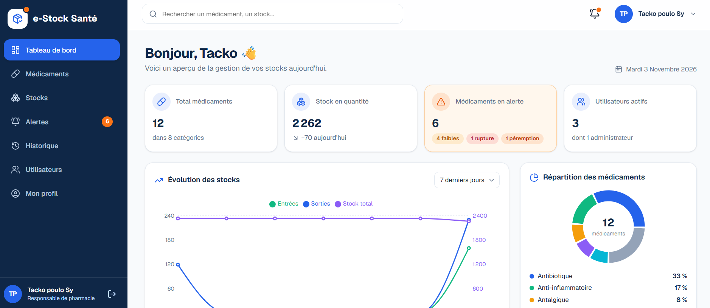
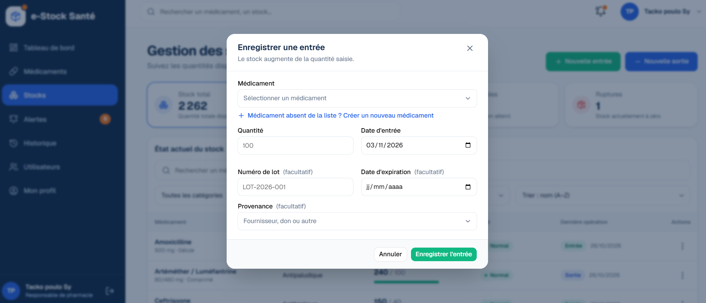
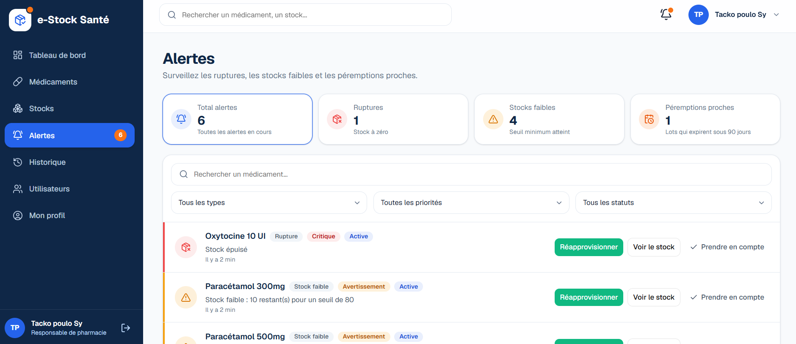
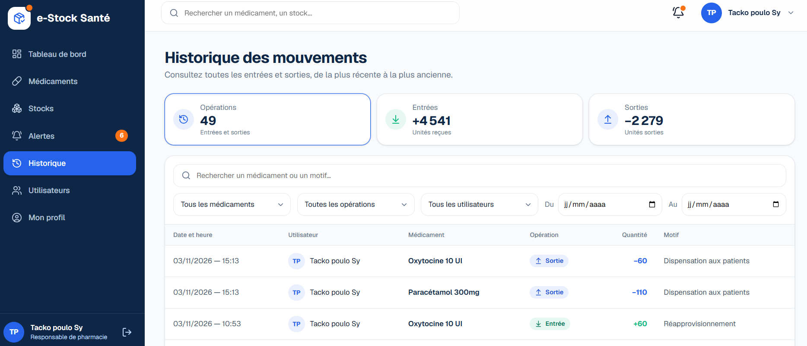
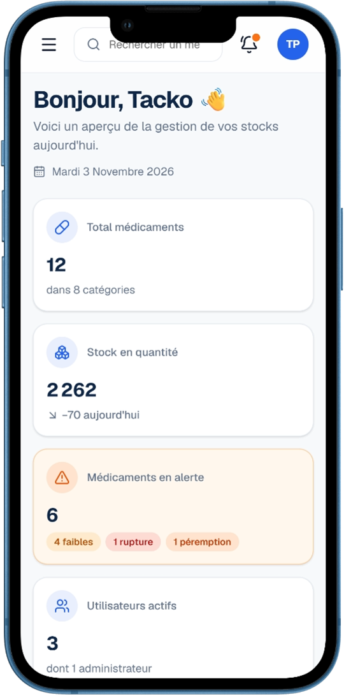

Gestion des stocks de médicaments
Ne manquez plus jamais de médicaments.
e-Stock Santé aide les structures de santé à suivre leurs stocks : chaque entrée et chaque sortie est enregistrée, le stock se calcule tout seul, et une alerte vous prévient avant la rupture ou la péremption.
Phase de test ouverte · Utilisable sur ordinateur et sur téléphone

Le constat
Ce que le suivi manuel laisse passer
Quand le suivi des stocks reste manuel, on le découvre trop tard.
1
La rupture
On la découvre quand le tiroir est vide : il est déjà trop tard pour commander.
2
La péremption
Un lot périmé est trouvé par hasard, oublié au fond d’une étagère.
3
Le doute
Qui a sorti quoi, et quand ? Le cahier ne le dit pas toujours.
Les fonctions
Ce que fait e-Stock Santé
Un catalogue clair
Chaque médicament a sa fiche : référence, catégorie, dosage, forme et seuil minimum, avec ses lots et leurs dates d’expiration.
Entrées et sorties
Réapprovisionnements, dons, dispensations, transferts, pertes : chaque mouvement est enregistré. Le stock se calcule tout seul et ne peut jamais devenir négatif.
Des alertes automatiques
Rupture, stock faible, lot qui expire dans 90 jours ou moins : vous êtes prévenu avant que le problème n’arrive.
Un historique complet
Chaque opération est datée, attribuée à une personne et conservée. Retrouvez qui a fait quoi en quelques clics.
Une équipe, des rôles
Un administrateur gère l’équipe de sa structure, valide les nouveaux collègues et désactive un accès. Les gestionnaires enregistrent les opérations.
Un tableau de bord
L’état de votre stock d’un coup d’œil : chiffres clés, évolution sur sept jours, produits proches de la rupture.
Au quotidien
Comment ça se passe
1
Vous créez votre catalogue
Vous ajoutez vos médicaments et fixez, pour chacun, le seuil en dessous duquel vous voulez être prévenu.
2
Vous enregistrez les mouvements
À chaque livraison et à chaque sortie, quelques champs suffisent. Le lot et la date d’expiration sont facultatifs, mais conseillés.
3
La plateforme calcule et prévient
Le stock est à jour, les alertes se créent et se lèvent toutes seules, l’historique garde la trace de tout.
Aperçu
À quoi ça ressemble
Toutes les captures de cette page ont été réalisées avec des données de démonstration.
Un approvisionnement en quelques clics
Choisissez le médicament, la quantité, le lot et la date d’expiration. Un aperçu vous montre le nouveau stock avant d’enregistrer.
- Une sortie plus grande que le stock est refusée immédiatement
- Le lot qui expire en premier est le premier à sortir
- L’alerte de stock faible s’éteint dès que le seuil est dépassé

Des alertes qui préviennent à temps
Les ruptures, les stocks faibles et les lots qui approchent de leur date d’expiration sont listés, les plus urgents en premier.
- Un bouton pour réapprovisionner ou voir les lots concernés
- « Prendre en compte » indique à l’équipe qui s’en occupe

Une traçabilité complète
Chaque entrée et chaque sortie porte la date, l’heure, le nom de la personne et le motif. Filtrez par médicament, par personne ou par période.
- Une opération enregistrée ne se modifie pas : l’historique reste fiable
- Idéal pour justifier une sortie ou préparer un bilan

Utilisable partout
Sur ordinateur comme sur téléphone, sans rien installer : ouvrez votre navigateur. Enregistrez une sortie directement depuis le rayon.

Pour qui
Pensée pour les structures de santé
Chaque structure dispose de son propre espace, avec ses médicaments et son équipe.
Sécurité et données
Vos données restent les vôtres
Chaque structure est étanche
Une structure ne voit jamais les données d’une autre : médicaments, stocks, historique et équipe sont séparés.
Aucune donnée de patient
La plateforme ne gère que des médicaments, des quantités et les membres de l’équipe. Elle n’a aucun champ pour des données de patient.
Des comptes gérés par un service spécialisé
La connexion repose sur Firebase (Google), avec la connexion Google et la vérification de l’adresse e-mail. e-Stock Santé ne stocke aucun mot de passe.
Des droits selon le rôle
Administrateurs et gestionnaires n’ont pas les mêmes droits. Le serveur applique toutes les règles : le contourner depuis le navigateur ne sert à rien.
Où en est le projet
Une première version en phase de test
La plateforme est en ligne et fonctionne. Nous la testons avec des professionnels : leurs retours décident de la suite.
Disponible aujourd’hui
Ce que vous pouvez essayer
- Catalogue de médicaments, lots et dates d’expiration
- Entrées et sorties de stock
- Alertes de rupture, de stock faible et de péremption
- Historique complet et filtrable
- Gestion de l’équipe et des rôles
- Tableau de bord et utilisation sur téléphone
Pistes envisagées
Ce qui pourrait suivre
- Importer un catalogue depuis Excel
- Alertes par e-mail ou SMS
- Export de l’historique en Excel ou en PDF
- Inventaire physique : corriger les écarts
- Fonctionnement avec une connexion instable
- Hébergement permanent, avec sauvegardes
Ce sont des pistes, sans date annoncée : l’ordre dépendra des retours des testeurs.
Questions fréquentes
Vous vous demandez peut-être…
Faut-il installer quelque chose ?
Non. e-Stock Santé s’utilise dans un navigateur web, sur ordinateur ou sur téléphone.
Une autre structure peut-elle voir mes données ?
Non. Chaque structure a son propre espace, et le serveur filtre chaque demande selon la structure de la personne connectée.
Peut-on y enregistrer des données de patients ?
La plateforme n’est pas conçue pour cela : elle ne gère que des médicaments, des quantités et les membres de l’équipe. Pendant la phase de test, nous demandons de n’y saisir que des données d’essai.
Combien ça coûte ?
La plateforme est en phase de test. Les conditions seront précisées plus tard : n’hésitez pas à nous écrire pour en discuter.
Que se passe-t-il si la connexion Internet est instable ?
Il faut une connexion pour enregistrer une opération. Un fonctionnement avec une connexion instable fait partie des pistes que nous étudions.
La première page met du temps à s’ouvrir. Est-ce normal ?
Oui, pendant la phase de test : le serveur gratuit s’endort après une période sans visite, et peut mettre jusqu’à une minute à se réveiller. Ensuite, tout est rapide.
Comment participer au test ?
Ouvrez la plateforme, créez un compte avec votre adresse e-mail, confirmez-la, puis indiquez votre structure. Écrivez-nous ensuite vos remarques : elles nous sont précieuses.
Contact
Une structure intéressée ?
Une question, une démonstration, l’envie de tester la plateforme ? Écrivez-nous : nous vous répondrons personnellement.
+221 77 175 42 65tackopoulos@gmail.com